تابع محفظتك الرقمية بهدوء وانضباط
قارن محفظتك بالبيتكوين والذهب والفضة: هل كان الأفضل أن تضع المبلغ نفسه فيها؟
تطبيق وبوت تيليجرام بنيته لنفسي لمتابعة محفظتي، وأفتحه الآن لعدد محدود من الأعضاء. يذكّرك بقواعدك أنت، ولا يبيع لك شيئاً.
الإشارة تقارن سعر اليوم بمتوسط شرائك، ثم تراجعها أمام البيتكوين.
ما هو Cute Portfolio؟
محفظتك في مكان واحد
كل عملاتك وصفقاتك، ربحك الفعلي، ومقارنة صادقة: هل كان الأفضل أن تضع المبلغ نفسه في البيتكوين أو الذهب أو الفضة؟
إشارات انضباط لا توصيات
احتفاظ، تعزيز، أو بيع — محسوبة من متوسط شرائك وحدودك أنت، وتُحسم على الإغلاق اليومي لا على ذبذبة لحظية.
بوت تيليجرام بالعربية والإنجليزية
ملخص الصباح، تنبيهات مجمّعة ثلاث مرات يومياً، وأسئلة عن محفظتك يجيب عنها الذكاء الاصطناعي. ومعه قناة الإشارات للأعضاء.
لماذا يوجد Cute Portfolio
تمكين المستثمر العربي
تمكين المستثمر العربي بأداة مجانية ذكية ومتكاملة لإدارة محفظته الرقمية وتنظيم خطط التجميع وجني الأرباح بعيداً عن العشوائية والعواطف.
مجتمع عربي واعٍ
بناء مجتمع عربي واعٍ يعتمد على البيانات الحية والمؤشرات الدقيقة لاتخاذ قرارات استثمارية مدروسة، بتجربة سلسة ومتاحة للجميع دون أي قيود.
ماذا ستجد فيه
خطة تجميع وتذكير بالشراء الدوري
حدّد هدفاً لكل عملة وتابع تقدّمك نحوه.
خطة خروج
مستويات جني أرباح تحددها مسبقاً، وتنبيه عند الوصول إليها. ومعها مؤشرات قمة السوق: هيمنة البيتكوين، وهيمنة USDT، ونسبة ETH/BTC مقابل مستوياتك أنت.
مركز السوق
العملات، الأسهم المرمّزة، الذهب والفضة، وموسم العملات البديلة.
قناة الإشارات على تيليجرام
قناة Cute Portfolio Signals للأعضاء: نبض السوق صباحاً ومساءً، خريطة القطاعات، الرافعة وحركة كبار المتداولين، مع التعليق تحت كل منشور.
حاسبة زكاة العملات
للعملات بنصاب قيمة 85 غراماً من الذهب، وللذهب (85 غ) والفضة (595 غ) كلٌّ بنصابه، في اليوم الهجري الذي تختاره. والبوت يذكّرك قبله بأسبوع ثم يرسل لك المبالغ في يومه.
التوزيع والأهداف
ترى حصة كل فئة من محفظتك، وتحدد الحصة التي تريدها. وإذا ابتعدت فئة عن هدفها، تخبرك البطاقة كم تشتري أو تخفف.
عربي كامل وإنجليزي كامل
التطبيق والبوت والتنبيهات بلغة واحدة تختارها، بواجهة عربية كاملة من اليمين إلى اليسار. وقناة الإشارات بالعربية والإنجليزية، كل لغة في سطر.
ابدأ في دقائق، لا في أيام
لن تُدخل صفقاتك واحدة واحدة. هناك ثلاث طرق سريعة لتصبح محفظتك في التطبيق.
استورد من منصتك
ملف CSV من Binance أو Gate أو غيرهما يُدخل كل صفقاتك دفعة واحدة. ترى كل سطر قبل الإضافة، والصفقات المسجّلة من قبل لا تتكرر.
سجّل بالكلام في البوت
اكتب للبوت «اشتريت 0.01 BTC بسعر 95 ألف»، فيعرض لك ما سيتغير، وتؤكد، فتُحفظ في التطبيق.
طابق محفظتك الحقيقية
أضف العنوان العام لمحفظتك، فيقارن التطبيق أرقامه بما فيها فعلاً ويريك الفرق.
السوق كله في صفحة واحدة
بدلاً من التنقل بين خمسة مواقع: مؤشرات السوق، وحتى أكبر 500 عملة، وروابط كل عملة، في مكان واحد.
- الخوف والطمعقراءة اليوم مع أمس والأسبوع الماضي.
- موسم العملات البديلةرقم من 100: كم عملة من أكبر 100 تفوقت على البيتكوين خلال 90 يوماً. يبدأ الموسم عند 75، وله صفحة تفصيلية.
- الهيمنة السوقيةحصة BTC و ETH و USDT وباقي العملات، مع نسبة ETH/BTC.
- تدفقات صناديق ETFالصناديق الفورية الأمريكية للبيتكوين والإيثيريوم: كم دخل وكم خرج.
- القيمة السوقية الإجماليةمع حجم التداول في 24 ساعة.
- تابع حتى 500 عملةتختار القائمة من أكبر 100 حتى أكبر 500 عملة، مع بحث، والأكثر ارتفاعاً وانخفاضاً في 24 ساعة أو 7 أيام، وقائمة متابعة خاصة بك، وعملات محفظتك. والبوت يعرض القوائم نفسها.
- ثلاثة روابط لكل عملةخريطة التصفية (CoinGlass)، وتوقع السعر (CoinCodex)، وصفحتها على CoinMarketCap.
- الأسهم المرمّزة والمعادنتبويبان في الصفحة نفسها: الأسهم المرمّزة، والذهب والفضة.
المؤشرات بأرقام CoinMarketCap نفسها، والأسعار من CoinGecko، وتدفقات ETF من SoSoValue.
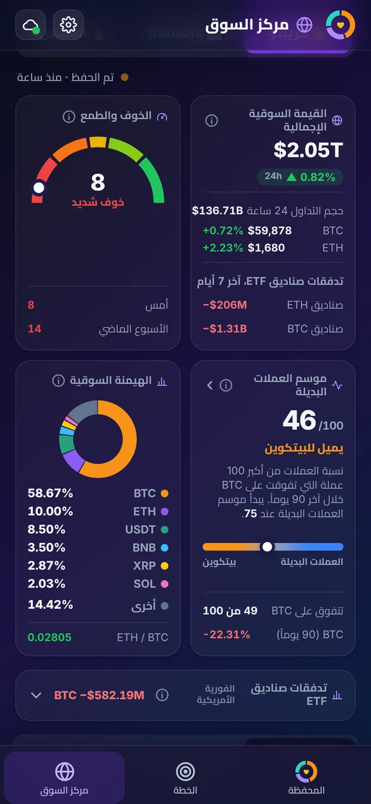
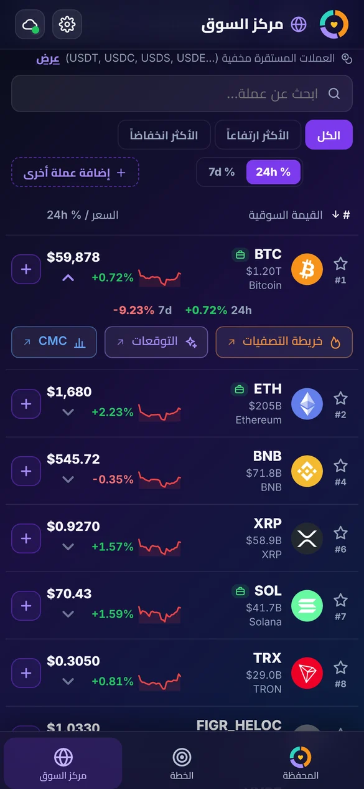
أكثر من تنبيهات: مساعد لمحفظتك داخل تيليجرام
البوت لا يكتفي بإرسال التنبيهات. تكتب له أو تكلّمه بكلامك العادي، فيجيب بأرقام محفظتك وبيانات السوق الحية، وينفّذ ما تطلبه داخل التطبيق.
اسأله بكلامك
يجيب بالذكاء الاصطناعي من بيانات حية، ويذكر مصدر كل رقم. يفهم أسئلة «ماذا لو» أيضاً.
كلّمه بصوتك
رسالة صوتية بالعربية أو الإنجليزية حتى دقيقتين، ويرد كأنك كتبت. (للعضوية المميزة)
سجّل صفقة بالكلام
يعرض لك ما سيتغير: الكمية، متوسط السعر، والربح. تضغط تأكيد فتُحفظ في التطبيق.
تنبيهات بكلامك
للعملات، محفظتك كلها، الذهب والفضة، والأسهم الأمريكية. يفحص كل 5 دقائق، وكل تنبيه يصل مرة واحدة.
الأسعار والسوق بكلمة
أرسل رمز العملة فيأتيك السعر والاتجاه والعقود الآجلة والتمويل. والسوق والأسهم المرمّزة والمعادن بضغطة.
يرتّب لك يومك
الصباح الذكي: 3 أشياء تفعلها اليوم. المساء الذكي: ماذا حدث وماذا تراقب. ملخص رادار للرافعة والقطاعات وكبار المتداولين، ورسالة مثبتة تتحدث كل ربع ساعة.
تداول تجريبي
تدرّب بأموال وهمية وأسعار حقيقية، وقارن نتيجتك بالاحتفاظ بالبيتكوين.
التطبيق كله داخل تيليجرام
يفتح التطبيق نفسه داخل تيليجرام ودخولك مسجّل تلقائياً، بدون كلمة سر.
أرصدة المنصات
أرصدة Binance و Gate بمفتاح قراءة فقط تربطه من التطبيق.
البوت يقرأ محفظتك لك وحدك، وأمر /forget يحذف كل ما يحتفظ به عنك.
تقرير كامل عن محفظتك، وتنزّله عندك
أرقامك ليست حبيسة التطبيق: تحليل مكتوب بالذكاء الاصطناعي، وتقرير PDF، وملف CSV تفتحه في Excel.
تحليل بالذكاء الاصطناعي
- تقرير كامل عن محفظتك في بطاقات مرتبة، بالعربية أو الإنجليزية.
- مجاناً: تنسخ الطلب إلى تطبيق Claude الخاص بك وتلصق الرد، فيظهر بنفس البطاقات.
- تقرير سريع داخل التطبيق للعضوية المميزة، أو بمفتاح Claude الخاص بك.
- زر نسخ، وزر PDF لحفظ التقرير.
تقرير المحفظة PDF
- الصفحة الأولى: الأرقام الرئيسية، ورسم الأصول، ورسم الأداء، وخطة التجميع.
- ثم جدول العملات كاملاً في الصفحات التالية.
- بتاريخ اليوم، جاهز للحفظ أو الطباعة.
ملف CSV
- نفس ما يعرضه الجدول: الصفوف نفسها، بالترتيب نفسه والأرقام نفسها.
- مع الاسم، والفئة، والإشارة، وملاحظاتك.
- يفتح في Excel أو Google Sheets.
شاهده كما هو
الشاشات حقيقية من التطبيق والبوت، بمحفظة تجريبية: الأرقام ليست لمحفظة أي شخص، وأسعار السوق حقيقية بتاريخ 21 نوفمبر 2026.
على الموبايل
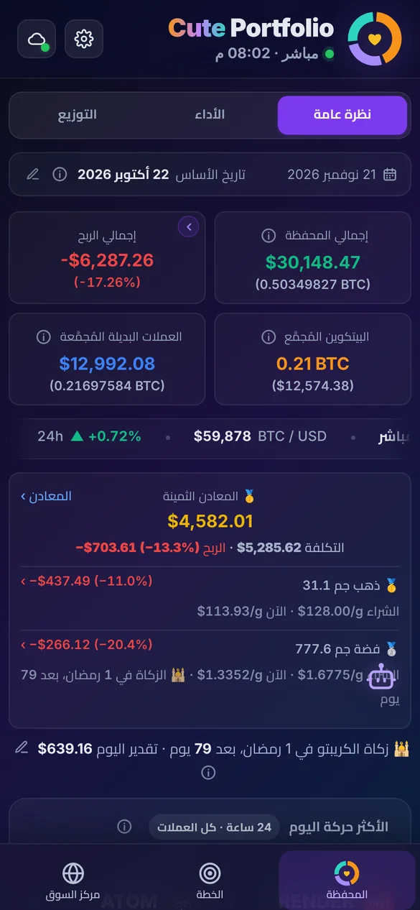
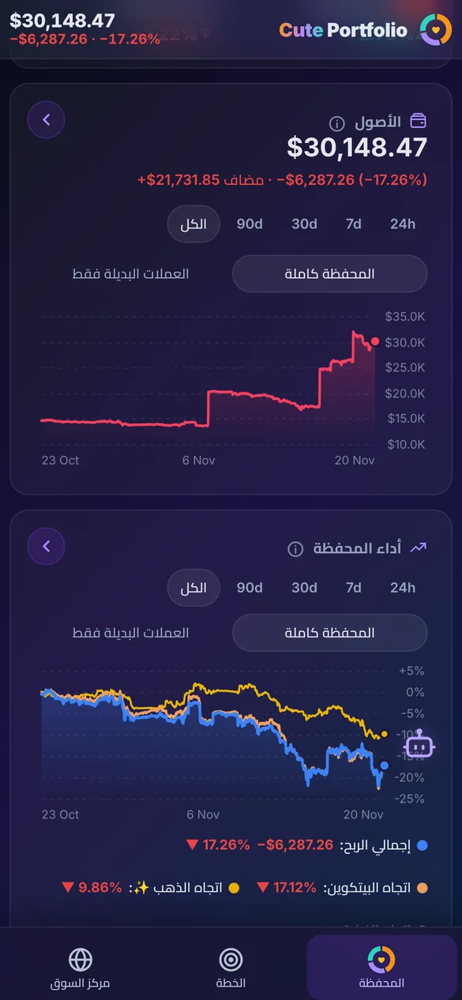
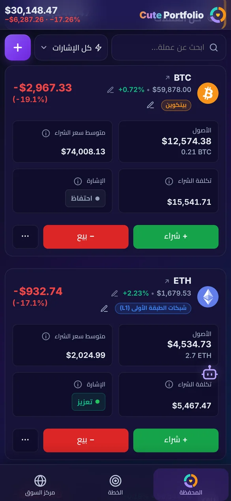
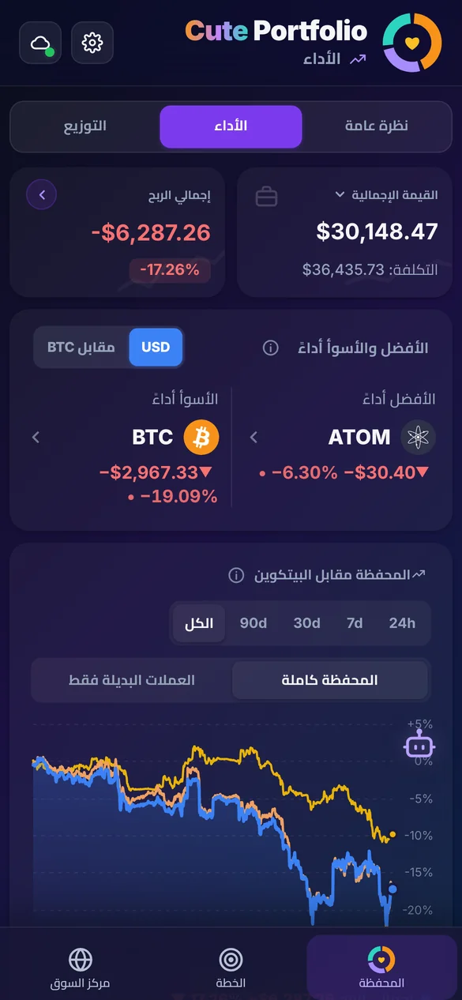
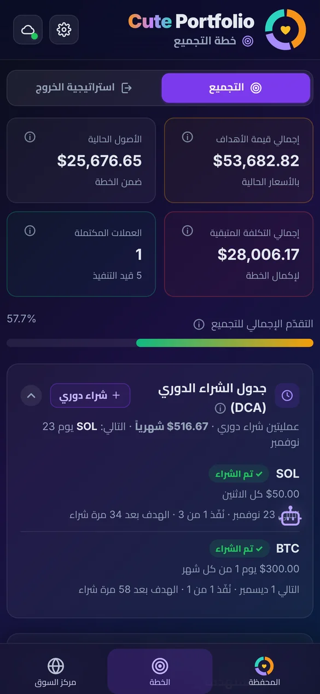
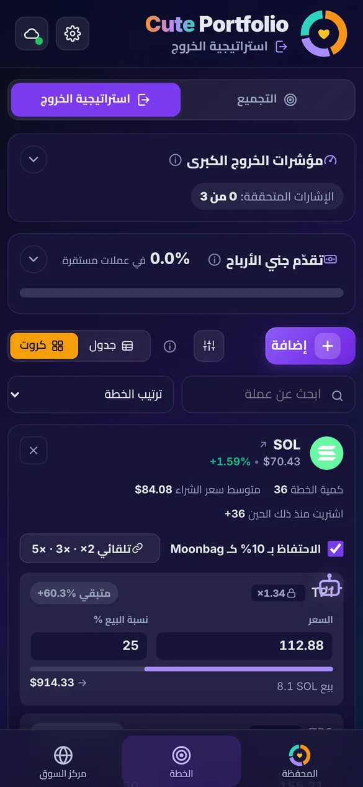
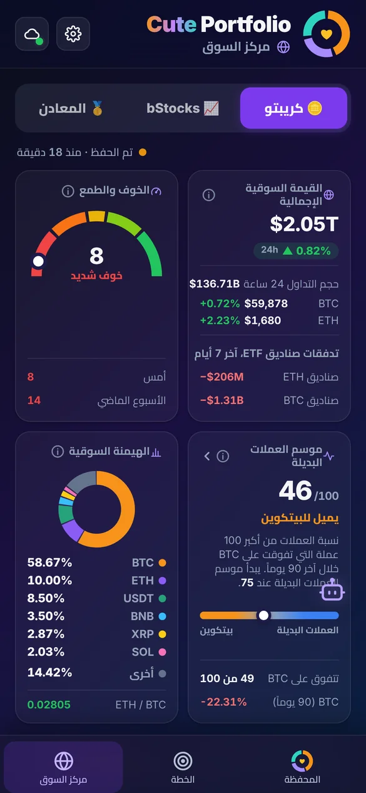
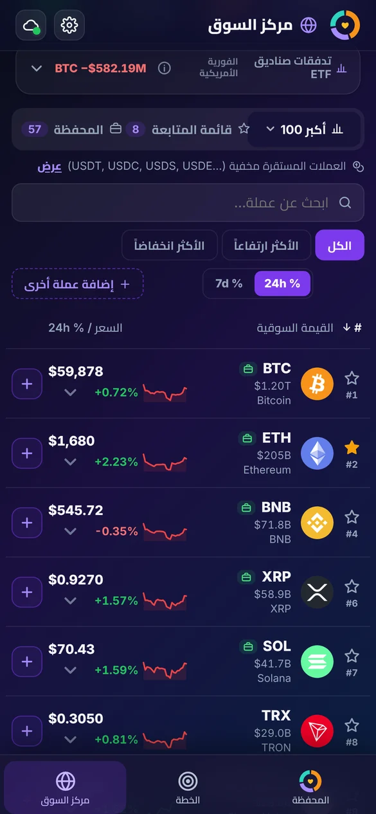
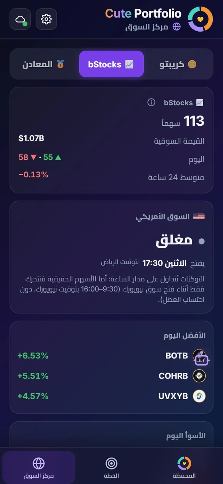
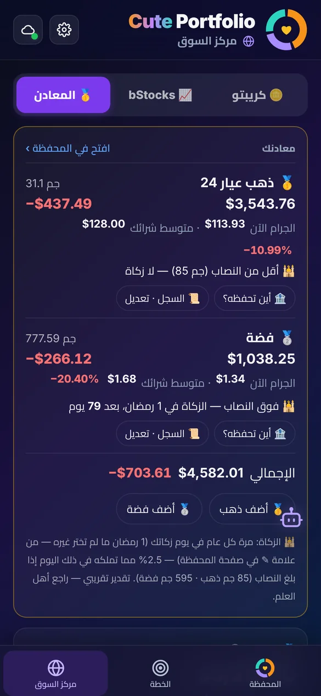
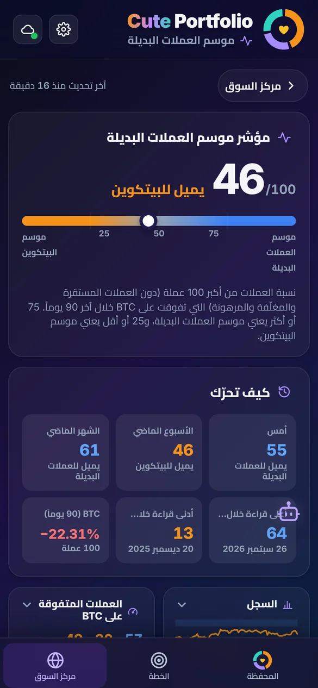
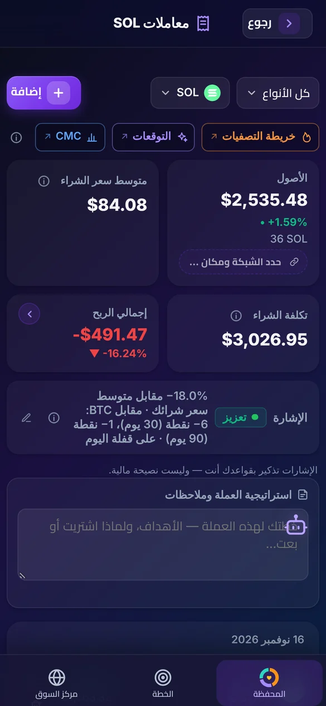
على اللابتوب
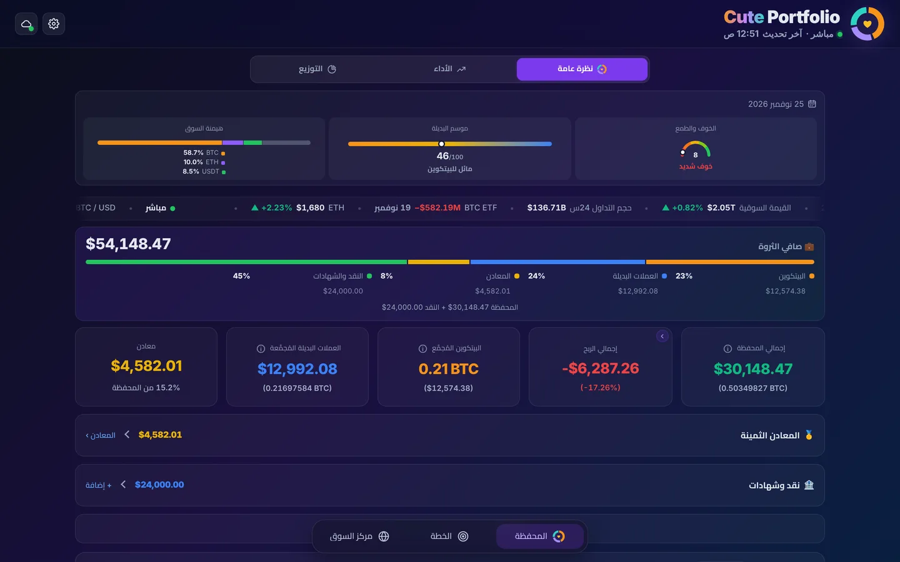
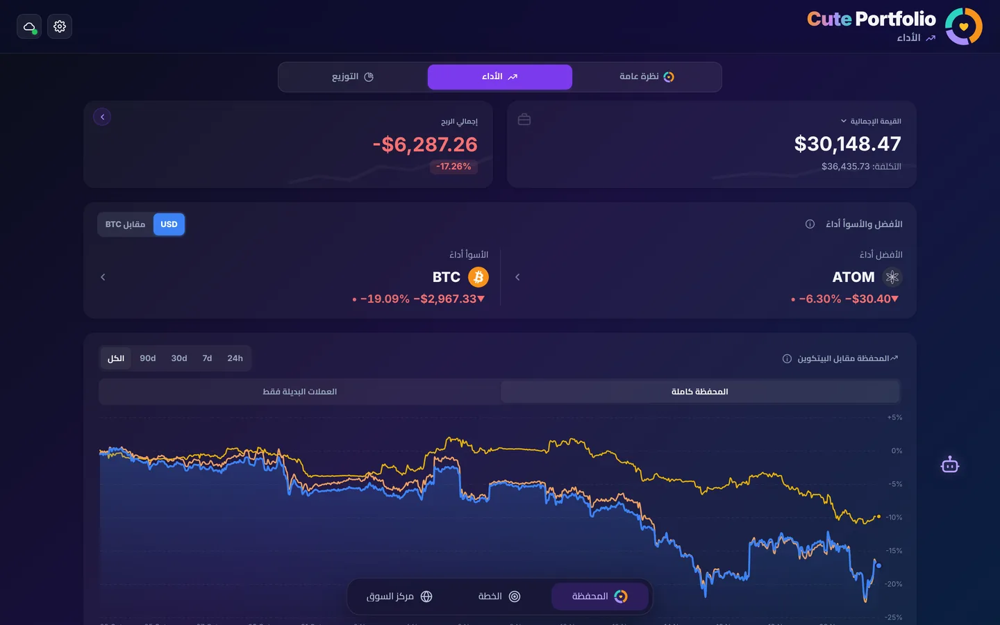
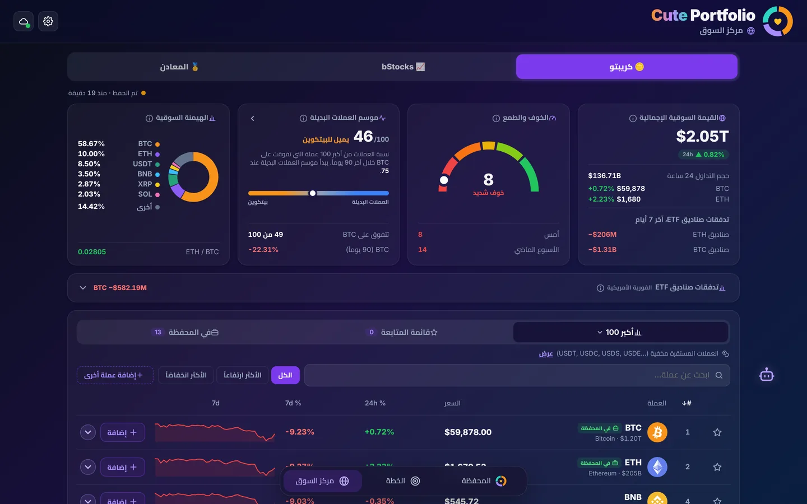
البوت وقناة الإشارات
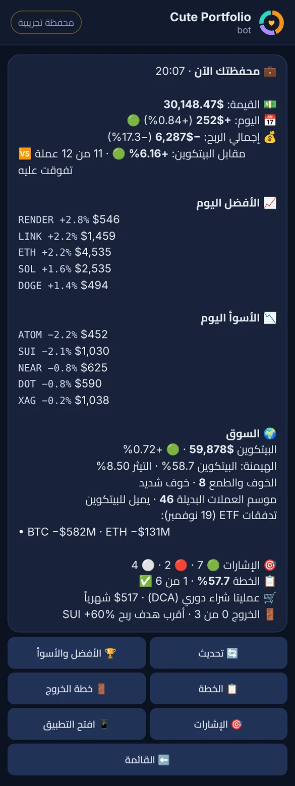
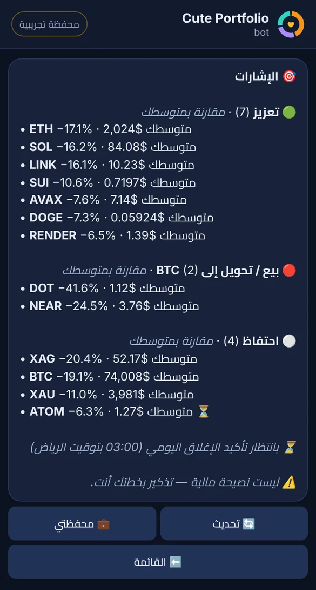
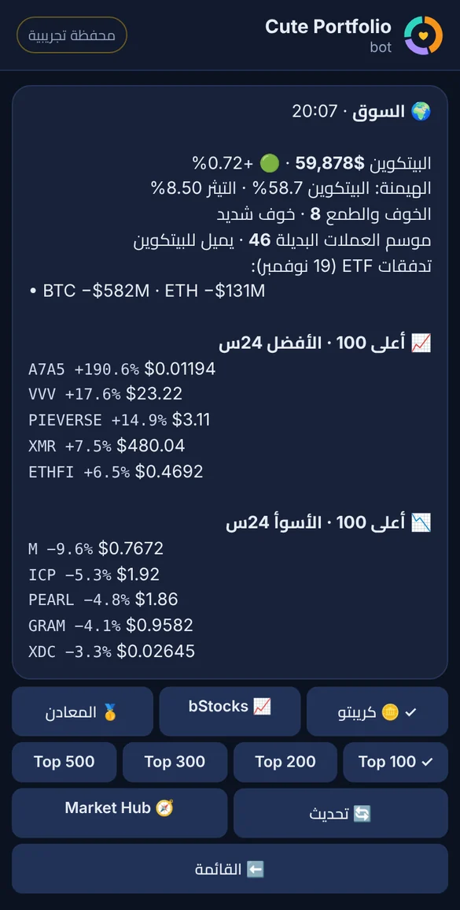
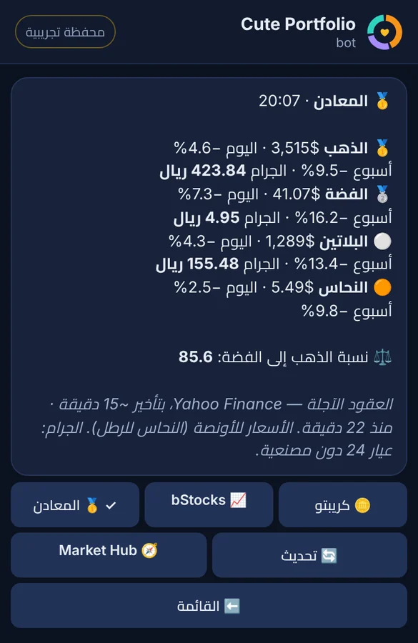

أموالك تبقى عندك، وبياناتك لك
Cute Portfolio أداة متابعة فقط. لا يمسك أموالاً، ولا يستطيع أن يتداول أو يسحب.
ليس منصة تداول
أموالك تبقى في منصتك ومحفظتك. التطبيق يقرأ ويحسب ويذكّر، ولا يحرّك شيئاً.
مفتاح قراءة فقط
أرصدة Binance و Gate تُقرأ بمفتاح للقراءة فقط، لا يصلح للتداول ولا للسحب.
العنوان العام فقط
لمطابقة محفظتك تضيف عنوانها العام. لا نطلب أبداً عبارة الاسترداد ولا المفتاح الخاص.
دخول بدون كلمة سر
تدخل برابط يصلك على بريدك، وداخل تيليجرام يفتح التطبيق ودخولك مسجّل.
نسخة احتياطية مشفّرة
تنزّل نسخة من بياناتك في ملف مشفّر بكلمة سر تختارها أنت، بتشفير AES-256.
البوت ينسى متى طلبت
أمر /forget يحذف كل ما يحتفظ به البوت عنك: التنبيهات، وذاكرة المحادثة، والإعدادات، والربط.
المشروع غير ربحي: بلا إعلانات، وبلا بيع بيانات.
ما الذي تفعله الإشارات، وما الذي لا تفعله
- ليست نصيحة مالية. الإشارة تذكير بقواعدك أنت، وليست وعداً بربح.
- اختبرناها على أسعار فبراير – نوفمبر 2026: محفظة عملات بديلة اتّبعت الإشارات انتهت أفضل بنحو 6.8% من الاحتفاظ بدون إشارات.
- وفي الفترة نفسها، وضع المبلغ كله في البيتكوين كان أفضل منها بنحو 3.5%. نذكر ذلك لأنه الحقيقة.
- أسعار السوق تتحدث كل 30 دقيقة تقريباً، وتنبيهات البوت تُفحص كل 5 دقائق، فليست أداة تداول لحظي.
كل شيء مجاني، والمميز اختياري
مجاني للجميع
كل المزايا الأساسية مجانية: المحفظة، الإشارات، التنبيهات، الخطة، مركز السوق، والقناة. المشروع غير ربحي.
عضوية مميزة — اختيارية
350 نجمة تيليجرام شهرياً. تساعد في تكلفة الخوادم والذكاء الاصطناعي، وتضيف:
- رسائل صوتية للبوت
- 20 سؤالاً للذكاء الاصطناعي يومياً بدلاً من 5
- 3 تقارير تحليل سريعة يومياً في التطبيق
أردت إجابة صادقة عن سؤال واحد
بنيت Cute Portfolio لنفسي أولاً. كنت أريد أن أعرف بالأرقام: هل قراراتي في العملات أفضل من أن أضع المبلغ نفسه في البيتكوين أو الذهب وأتركه؟
ثم احتجت شيئاً يذكّرني بقواعدي أنا حين يتحرك السوق، بدل أن أقرر تحت الضغط. فصار التطبيق، ثم البوت، ثم القناة.
أفتحه اليوم لعدد محدود لأن ما نفعني قد ينفع غيري. لا أبيع شيئاً، ولا أقدّم توصيات، والمشروع غير ربحي.
الأماكن محدودة، والدخول بدعوة
استلم رمز الدعوة
أرسله لك شخصياً. نبدأ بـ 20 مكاناً ونتوسع تدريجياً.
افتح البوت والتطبيق
أدخل الرمز في البوت، ثم اربط محفظتك في التطبيق — على الموبايل أو اللابتوب.